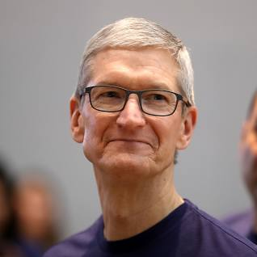

Tim Cook (b. Timothy Donald Cook November 1, 1960) is an American businessman, best known as the current chief executive officer of Apple, Inc.
Cook first joined Apple in March of 1998 as the senior vice president of Worldwide Options, and he eventually served as the executive vice president of Worldwide Sales and Operations. He had been the chief operating officer until August of 2011, when he was selected to succeed Steve Jobs as the chief executive officer. Cook served as the CEO on multiple occasions during Jobs’ medical leave of absence.
In early 2012, Tim Cook was provided 1 million shares by Apple’s board of directors. Cook’s compensation package of more than $368 million is the highest total of any CEO in the world.
Tim Cook was born and raised in Robertsdale, Alabama, a small town near Mobile. His father was a shipyard employee, while his mother was a homemaker. Cook was a graduate of Robertsdale High School. He received a Bachelor of Science degree in 1982 from Auburn University, and an M.B.A. from Duke University in 1988, where he was a Fuqua Scholar.
Cook serves with both the National Football Foundation and Nike on their board of directors.
Cook has given much of his earnings to charitable organizations. He was reported to donate $100 million in 2012.
Cook maintains a regular exercise routine that includes cycling, hiking and going to the gym. He is noted as an early riser, often sending emails before 4:30 a.m. At one time, Cook conducted Sunday night staff meet by telephone as preparation for the upcoming week.
Tim Cook acted as the chief operating officer (COO) of the computer reseller department at Intelligent Electronics. Cook worked for 12 years as the director of North American Fulfillment at IBM, where he oversaw distribution and manufacturing fulfillment for the company’s personal computer department in Latin and North America. Cook was also the vice president of corporate materials at Compaq for a short time.
Tim Cook was asked to join Apple by Steve Jobs in 1998. His first role at Apple was Senior Vice President for Worldwide Operations. His main responsibility was to organize the workflow among Apple’s departments such as distribution, manufacturing and supply. Cook’s most notable achievement during this time was his decision to remove Apple’s manufacturing from closing warehouses and factories around the world. His other responsibilities including leading the customer support and sales force efforts of the company. As a result of his efforts, Apple has excelled in meeting enormous public demands for products such as iPhones, iPads, iPods and Macs.
Cook also led the Macintosh division at Apple, hearing an integral role in the development of relationships with both resellers and suppliers. This development offered further security as Apple asserted itself in the increasingly crowded technological marketplace.
Cook gave the commencement speech at Auburn University’s graduation ceremonies in 2010. In his speech, he stressed the importance of intuition as a way to guide new through major life choices, and continued by saying that hard work and intense preparation were also necessary to success.
Tim Cook who temporarily served as Apple CEO in 2004, after Steve Jobs underwent pancreatic cancer surgery. In 2009, Cook returned to this role for several months as Jobs recovered from a liver transplant.
In January of 2011, the board of directors at Apple approved another extended leave of absence for Steve Jobs. During that period, Cook was charged with overseeing most of the company’s day-to-day operations while Jobs continued to make major decisions. After Jobs officially resigned his post as CEO in August of 2011, Cook was elevated to the role of CEO of Apple, Inc.
Tim Cook name to the 100 Most Influential People in the World list by Time magazine in April of 2012.